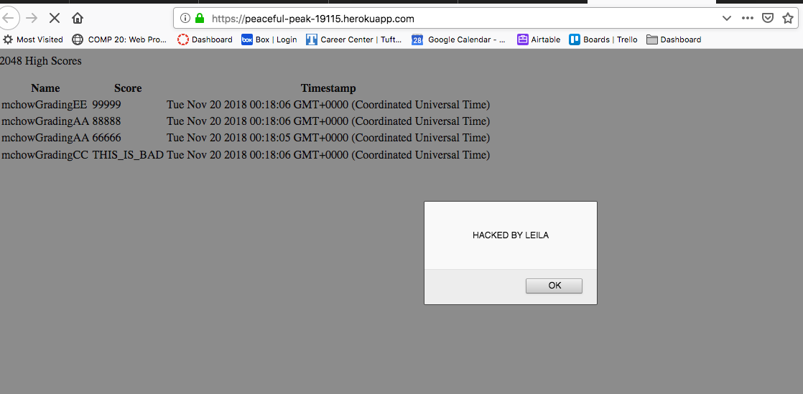
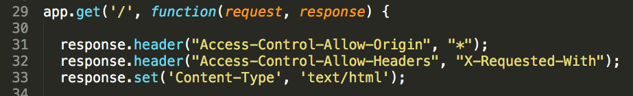
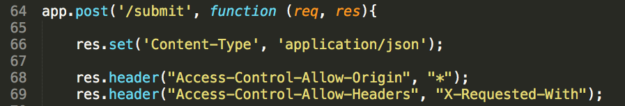
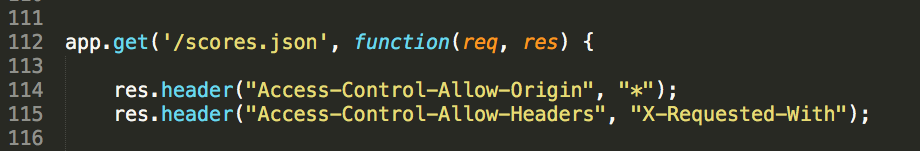
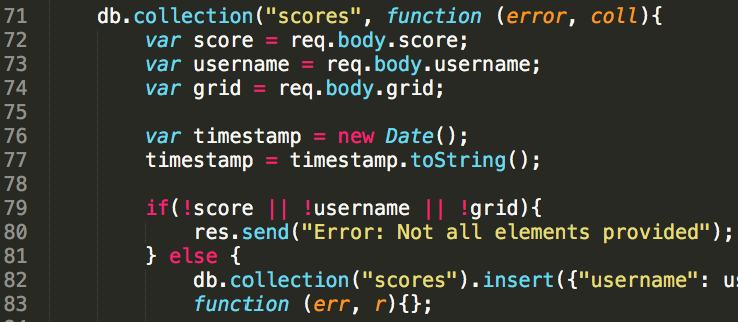
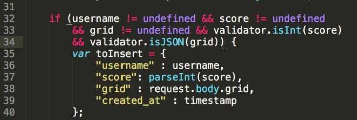
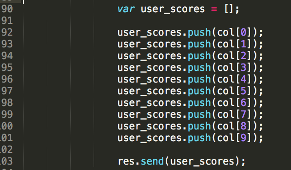
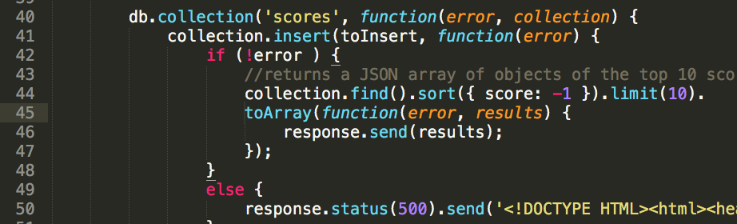

This report provides a security and privacy assessment for Jen Han's web application hosted on https://peaceful-peak-19115.herokuapp.com/. This server-side application processes user input from the game 2048 and displays scores in a game center. The changes Jen made to the 2048 game manager enables the player to input a username, which will be sent to the server alongwith the grid and score. The game server captures the data, creates a timestamp, and then stores the data into a mlab database. The server also fetches the data from the database, sorts the documents in a descending order of scores, and then displays the top 10 results.
I used curl to test the POST path (/submit). I also used the Firefox browser to test the GET path for querying(/scores.json).
1. Cross-Site Scripting: The server does not prevent users from injecting malicious code that could modify the features of the application or display unwanted content. YOU NEVER TRUST THE USER. When prompted to enter a username, the user can put in whatever they want.
2. NoSQL Injection: The /scores.json path is designed so that users can query the database with a specific username. However, the user is able to get access to the entire database with some query phrases. This is especially dangerous for databases that store sensitive information.
3. CORS: Currently, the server is sharing resources with any random website in the world. This is dangerous because
4. Data validation: In the /submit path, the program did not check for the data type of the username(string), score (integer) and grid (string).
5. Better code: In the / path, when fetching the 10 results from the database, Jen could use the .limit(10) operator to replace 10 lines of code.
The first vulnerability is Cross-Site Scripting on the /submit page. Using curl, I performed an attack by injecting an script for a alert box in the username field. My recommendation is to use a validator package. Alternatively, the developer could encode all the special characters in the user's input.
A hacker more malicious than I am could use Cross-Site Scripting to present all users with fraudulent web content, steal cookie information and obstruct the normal functioning of the site.
My XSS code:
The solution:
var validator = require('validator');
username=username.place(/[^\w\s]gi, '');>
The /scores.json page has a NoSQL Injection vulnerability. I was able to perform a query on the address bar and the page returned all the data in the database in JSON format, which I was not supposed to get access to. When I used the [$ne] operator, the server returned all the documents with fieldnames "not equal to" my query phrase.

My Query String:
https://peaceful-peak-19115.herokuapp.com/scores.json?username[$ne]=hello
The solution:
This issue can also be resolved by using a validator package. Add code in the /score.json path so that the program only executes the query if the query phrase from the user matches the usernames in the documents. Alternatively, you could add code that rejects query phrases that contains operators that might perform malicious injections, such as [$ne].
I found CORS vulnerabilities in all three routes.
By default, the same origin policy ensures that a script loaded from one origin cannot interact with a resource from another origin. Jen's program enables Cross Origin Resource Sharing (CORS) by setting the "Allow-Cross-Origin-Resource-Sharing" in the HTTP header to "x". CORS allows cross domain communications from the browser. However, CORS should only be used for legitimate and trusted requests. The "x" wildcard means any website in the world can make a XMLHttpRequest to Jen's program and exploit confidential information.
The CORS vulnerability falls under to the category of "Security Misconfiguration" of OWASP Top 10.
  The solution:
One way to mitigate the CORS vulnerability is a simple configuration. Configure the Access-Control-Allow-Origin header to allow requests only from the domains you trust, instead of a wildcard character.
In the /submit path, the program did not check for the data type of the scores and the grid. The score should be an integer.
The Problem:
The Solution:
In the / path, the code could be optimized using the ".limit(10" operator for mongodb.
The Problem:
The Solution:
The first three vulnerabilities are urgent. Using a validator package is a quick fix to issues including XSS, NoSQL Injection and data validation. The last two issues are concerned with the functionality or brevity of the code.